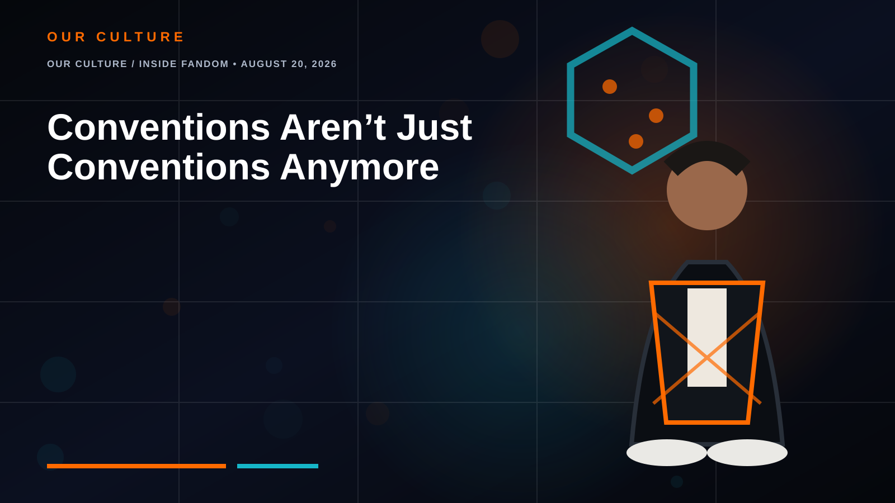

OUR CULTURE / INSIDE FANDOM • AUGUST 20, 2026
Conventions Aren’t Just Conventions Anymore
How fan events became the real-world internet.

There was a time when going to a convention mostly meant walking through a dealer room, attending panels, buying merchandise and maybe taking a photograph with somebody wearing a costume.
That definition is getting old.
The modern fandom convention is becoming something closer to a temporary city built around shared interests.
From expo floor to fandom ecosystem
Anime Expo describes itself as North America’s largest anime and manga convention, with attendance above 100,000. Its programming now extends beyond screenings and industry panels into cosplay, tabletop gaming, creator activities and interactive experiences.
Gen Con shows the same evolution from the tabletop side. Founded in 1968, it now fills its schedule with board games, trading-card games, RPGs, cosplay, seminars and entertainment. In 2026, Lucas Oil Stadium itself became additional gaming space, housing major organized-play areas, a game library and a life-size starship bridge simulator.
Japan’s Comic Market, better known as Comiket, shows a different branch of the same evolution. Comiket 108 took place August 15–16, 2026 at Tokyo Big Sight. The event remains centered on doujin and fan-created work, while cosplay operates as a formally managed part of the experience with dedicated areas and infrastructure.
China’s Bilibili World goes even wider. Its 2026 event identity mixes animation, games, virtual entertainment, model culture, markets and tabletop activities within one ecosystem.
The convention is becoming a platform
Online fandom separates people into categories: anime viewers, cosplayers, gamers, artists, collectors, streamers, tabletop players and virtual-creator fans. A large convention throws all of them back into the same physical room.
The person who came for manga may try a tabletop game. The gamer watches a cosplay competition. The cosplayer discovers an independent artist. The artist meets a publisher. Someone who arrived alone leaves with a Discord full of people.
That may be why physical conventions remain powerful even as fandom becomes overwhelmingly digital. The internet gives fandom reach. Conventions give it gravity.
Why physical fandom still matters
You can livestream a panel. You can order the merchandise. You can watch a trailer at home. What cannot be replicated quite as easily is the sensation of realizing that thousands of other people care about the same strange, hyper-specific thing you do.
The next generation of fan events may increasingly resemble miniature entertainment ecosystems rather than expos devoted to one medium. They are not merely places where fandom is displayed. They are places where fandom is practiced.
The RogueVerse take
Conventions are becoming the real-world interface for internet communities. They combine discovery, commerce, performance, learning, play and belonging in a way that no single app really can.
The convention did not become obsolete when fandom moved online. It became the place where online fandom puts on shoes and leaves the house.